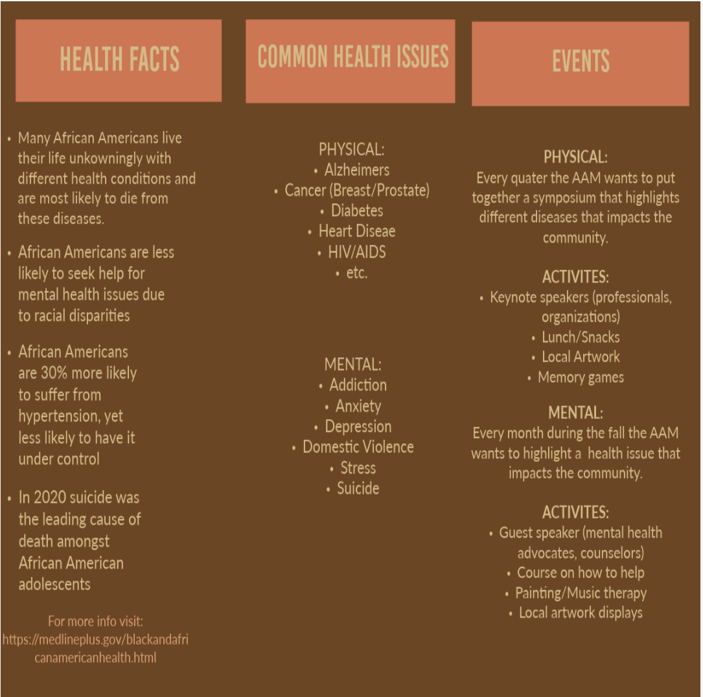
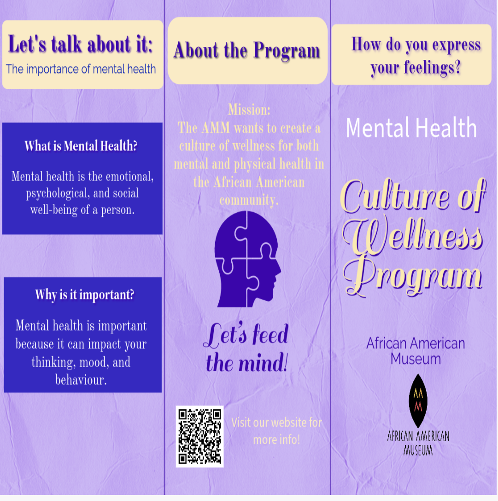
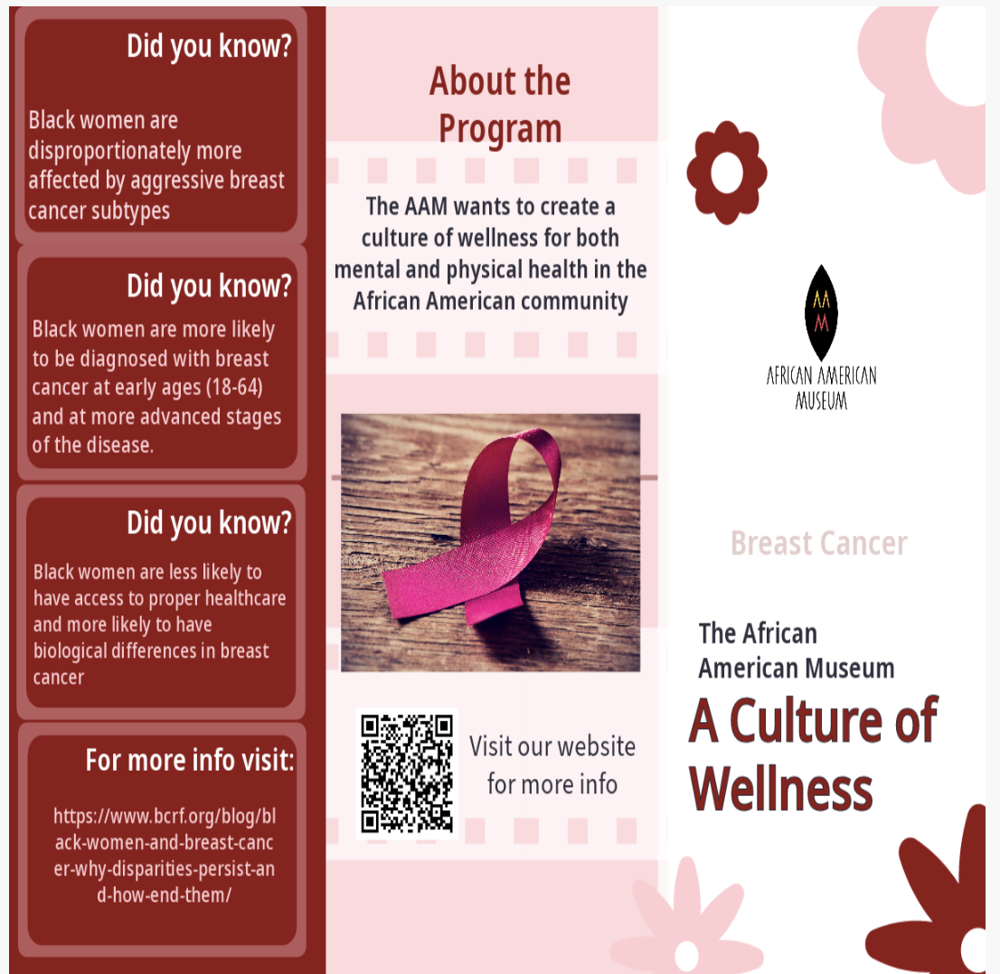
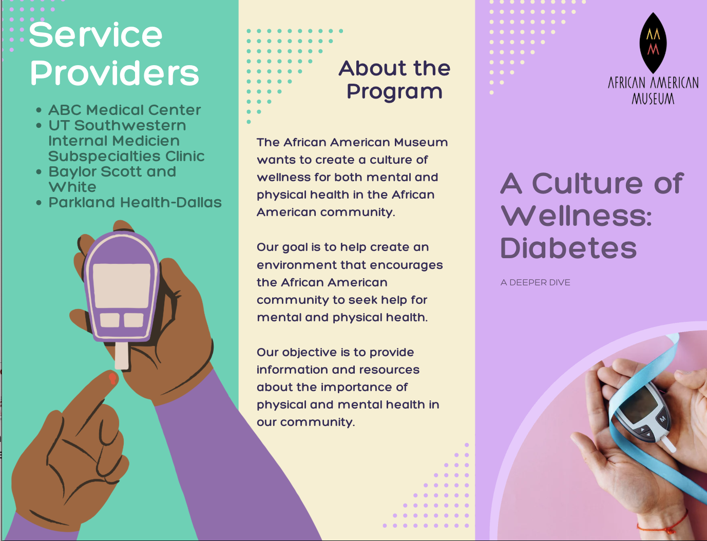

Art & Expression
Proposed artist collaborations, painting and poetry workshops, and music therapy connected to health and emotional well-being.
COMMUNITY HEALTH · VISUAL COMMUNICATIONS
Making health information more accessible to the Black Community of Dallas through research, visual storytelling, and community-centered programming.
ROLE
Programs & Visual Communications Intern
ORGANIZATION
African American Museum
TIMELINE
Summer 2023
Skills: Research · Visual Communication · Brochure & Web Design · Program Planning · Community Outreach

A community health initiative designed with accessibility in mind.
01 /THE CHALLENGE
Health information can feel overwhelming. The project focused on making information about health issues affecting Black communities easier to understand and access.
02 /MY APPROACH
I researched relevant health topics and local resources, then used simple language and visual communication to make the information more approachable for the museum's audience.
03 / THE WORK
A collection of health brochures created to communicate complex topics through visual hierarchy, and practical resources.



Additional materials covered Alzheimer's, Prostate Cancer, Heart Disease, HIV/AIDS, and an About the Program piece.
04 / DIGITAL ACCESS
Printed materials can reach visitors who enter the museum, but a website can make information available to a wider audience. I worked on a digital home for the initiative's information and local health resources.
The goal was to give people a place to explore the program and find relevant resources beyond a physical visit.
05 / BEYOND THE PAGE
I also developed ideas for a monthly event series that could make health education more interactive, welcoming, and connected to community life.
FEATURED EVENT CONCEPT
The proposed event combined access to a mobile mammogram unit, guidance from a health professional, interactive activities, and light snacks to create a more welcoming atmosphere for health education.
Proposed artist collaborations, painting and poetry workshops, and music therapy connected to health and emotional well-being.
Proposed a Dallas Fire Department fire truck tour for children alongside CPR training for adults.
POTENTIAL COMMUNITY PARTNERS
NAMI North Texas · UT Southwestern · North Texas Behavioral Health Authority · Baylor Scott & White · Methodist · Parkland Health
Organizations identified for potential outreach; partnerships are not represented as confirmed.
06 / DESIGN CHOICES
07 / OUTCOME & REFLECTION
My supervisor responded positively to the work and recommended identifying potential donors as a next step. My internship ended before I could pursue funding, and the program did not move forward after my supervisor retired.
The experience taught me that clear communication means meeting people where they are, but a strong idea also needs funding, collaboration, and follow-through to become reality. That is a lesson I would bring to any brand or community-facing role.
WHAT THIS WORK SAYS ABOUT ME
I can take a complicated subject, understand who it is for, and shape it into something people can engage with. I bring together research, visual communication, and practical planning to help ideas reach the people they are meant to serve.
Explore more work →